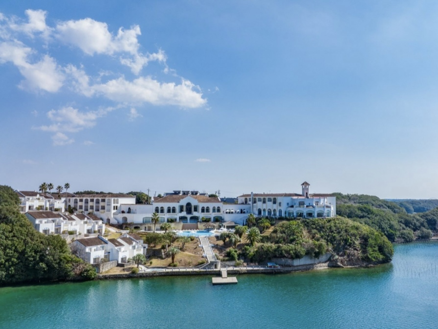
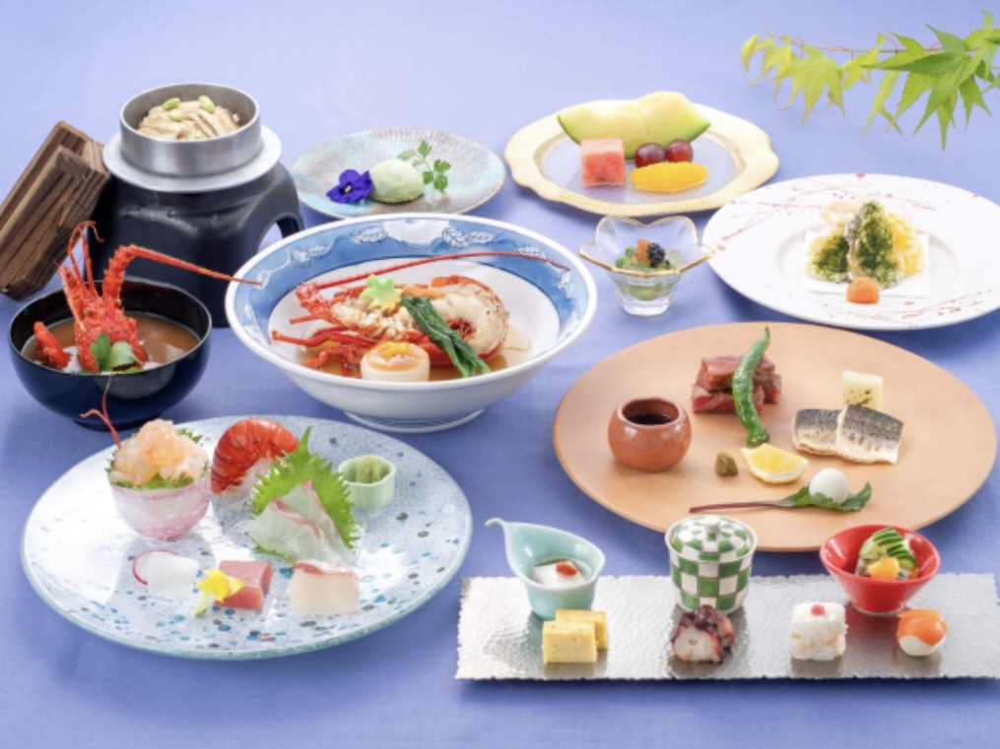

都リゾート
志摩ベイサイドテラス
📍 〒517-0501
三重県志摩市阿児町鵜方3618-33
ROOM
〜オーシャンツイン〜
2024年12月21日
リニューアルグランドオープン
英虞湾のきらめきとプールを見晴らすお部屋
窓を開ければ絵画のような風景から爽やかな風が吹きます〜
お楽しみに〜♪
DINNER
〜マレナSHIMA〜
本格的会席料理が楽しめる日本料理エリア
〜収穫祭 SHUKAKUSAI〜
■先付 茄子とアスパラ出汁ジュレ
いくら キャビア
■前菜 鯖と胡瓜黄身酢 蛸旨煮
鯖有馬山椒煮おぼろ昆布寿司
伊勢どりとトマト胡麻かけ
ゆり根サーモン
とうもろこし真仗
もずく酢
■造里 伊勢海老含む五種盛り合わせ
■炊合せ 伊勢海老具足煮 蕪 柚子味噌
■焼物 松阪牛あぶり焼 赤かます塩焼
柚子胡椒
■揚物 鮑あおさ揚 蓮根 パプリカ
海老煎餅 美味出汁
■御飯 穴子と新生姜の釜炊き御飯
■香の物 三種盛
■留椀 鬼殻汁
■デザート 抹茶アイス 果物盛り合わせ
特別な時間を一緒に過ごしましょう♡
